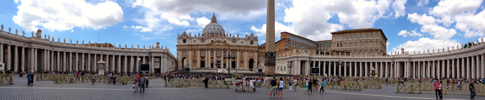
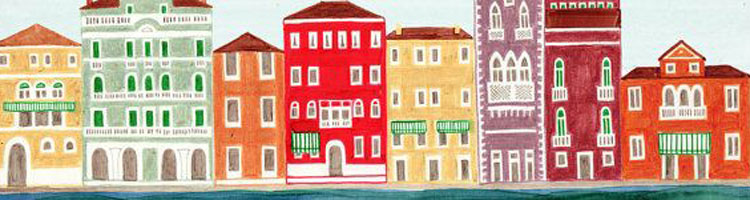
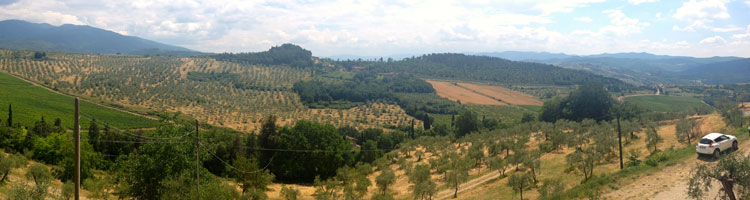

|  |
| Home The City Local Facts Travel Blogs Photo Gallery |
|
Day TripsVeniceVenice is a city in northeastern Italy sited on a group of 117 small islands separated by canals and linked by bridges. It is located in the marshy Venetian Lagoon which stretches along the shoreline, between the mouths of the Po and the Piave Rivers. Venice is renowned for the beauty of its setting, its architecture, and its artworks.  SienaSiena is a city in Tuscany, Italy. It is the capital of the province of Siena. The historic centre of Siena has been declared by UNESCO a World Heritage Site. It is one of the nation's most visited tourist attractions, with over 163,000 international arrivals in 2008. Siena is famous for its cuisine, art, museums, medieval cityscape and the Palio, a horse race held twice a year. PisaPisa is a city in Tuscany, Central Italy, on the right bank of the mouth of the River Arno on the Tyrrhenian Sea. It is the capital city of the Province of Pisa. Although Pisa is known worldwide for its leaning tower (the bell tower of the city's cathedral), the city of over 88,627 residents (around 200,000 with the metropolitan area) contains more than 20 other historic churches, several palaces and various bridges across the River Arno. Much of the city's architecture was financed from its history as one of the Italian maritime republics. Cinque TerreThe Cinque Terre is a rugged portion of coast on the Italian Riviera. It is in the Liguria region of Italy, to the west of the city of La Spezia. "The Five Lands" comprises five villages: Monterosso al Mare, Vernazza, Corniglia, Manarola, and Riomaggiore. The coastline, the five villages, and the surrounding hillsides are all part of the Cinque Terre National Park and is a UNESCO World Heritage Site. The Cinque Terre area is a very popular tourist destination. Chianti RegionThe Chianti region covers a vast area of Tuscany and includes within its boundaries several overlapping Denominazione di origine controllata (DOC) and Denominazione di Origine Controllata e Garantita (DOCG) regions. Other well known Sangiovese-based Tuscan wines such as Brunello di Montalcino and Vino Nobile di Montepulciano could be bottled and labeled under the most basic designation of "Chianti" if their producers chose to do so. Within the collective Chianti region more than 8 million cases of wines classified as DOC level or above are produced each year.  LuccaLucca is a city and comune in Tuscany, Central Italy, situated on the river Serchio in a fertile plain near theTyrrhenian Sea. It is the capital city of the province of Lucca. It is famous among other things for its intact Renaissance-era city walls. |
Reference Links |